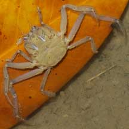
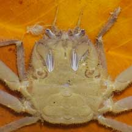
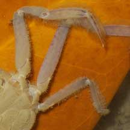
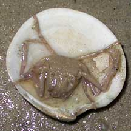
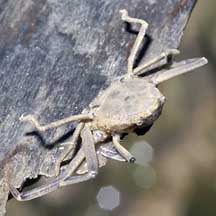
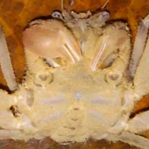
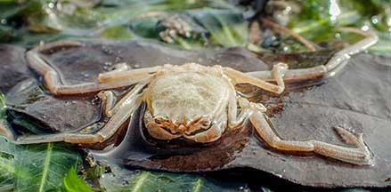

|
|
| crabs text index | photo index |
| Phylum Arthropoda > Subphylum Crustacea > Class Malacostraca > Order Decapoda > Brachyurans |
| Leaf
porter crab Family Dorippidae updated Dec 2019
Where seen? This shy and sneaky crab is commonly seen, by the sharp-eyed observer, especially on our Northern shores. To spot one, look for odd movement in a leaf or a shell, perhaps moving too quickly or against the currents. Often in mangroves, near seagrasses but also on shores near reefs, even under jetties in calm waters. Features: Body width to about 1.5cm. Named for its habit of carrying a leaf as a mobile hiding place, it may also "carry" a clam shell, a flat piece of wood or other bits of flotsam. Two pairs of legs are short and bent permanently over the back. These legs are tipped with hairy pads to cling onto the leaf or shell. Two other pairs of legs are longer and fringed with hairs. These fringed legs are used like paddles to swim slowly about. The body is flat and somewhat rectangular. It has rather long antennae for a crab. Pincers small and held flat against the body. Some may have one enlarged and inflated pincer, while others have pincers of similar size. The crab is more active at night. At this time, there are few predators above the water that can spot them in the dark. So at night, it swims with the leaf under it, to hide from aquatic predators below. If it senses danger from above, however, it will quickly flip under the leaf! During the day, it often hides under the leaf, half buried in the sand or mud. What does it eat? The crab is a scavenger, eating any dead plants or animals that it comes across. Status and threats: Leaf porter crabs are not listed among the threatened animals of Singapore. However, like other creatures of the intertidal zone, they are affected by human activities such as reclamation and pollution. Trampling by careless visitors also have an impact on local populations. |
 Changi, Apr 04 |
 |
 Two kinds of legs. |
|
 This one was 'carrying' a clam shell. Changi, Jul 02 |
 Seldom seen upper side. Labrador, Jan 06 |
 Some have one enlarged pincer. Raffles Marina, May 05 |
| Leaf porter crabs on Singapore shores |
On wildsingapore
flickr
|
| Other sightings on Singapore shores |
 East Coast-Marina Bay, Jan 21 Photo shared by Vincent Choo on facebook. |
| Filmed on Labrador,
Jun 08 leaf porter crab @ Labrador Nature Reserve 08June2008 from SgBeachBum on Vimeo. |
| Family
Dorippidae recorded for Singapore from Wee Y.C. and Peter K. L. Ng. 1994. A First Look at Biodiversity in Singapore +from The Biodiversity of Singapore, Lee Kong Chian Natural History Museum. **from WORMS
|
Links
|